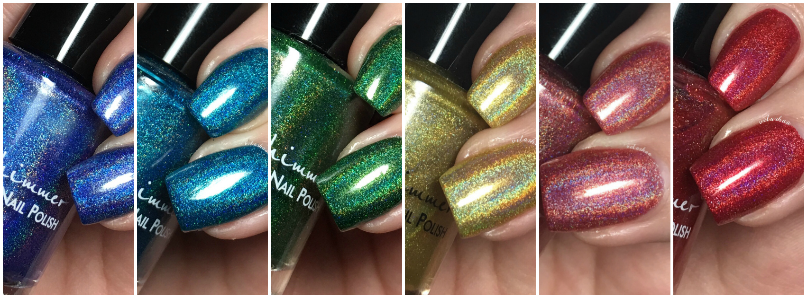
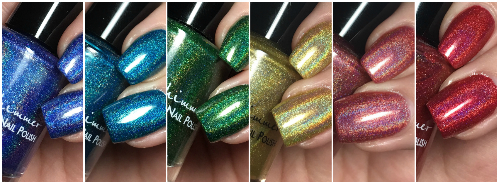

Indie Nail Polish
Welcome to the wonderful world of indie nail polish brands, where spectraflaire runs rampant and color etiquette doesn't matter.
Did you know that modern nail polish and car paint are actually connected? They are! The nail polish that we use today was created back in the 1920s after altering formulas and pigments for glossy car paints. Neat, right?
There are so many drugstore nail polish brands out there—Revlon, Essie, China Glaze, just to name a few. But after a while, they start to feel the same. You get your standard shimmers and creams, and every now and then, those dreadful chunky glitters that either sink to the bottom of the bottle or leave your nails with a weird, bumpy texture you can’t stop noticing for the entire manicure. Not fun. Indie brands, though, are a whole different story. These makers are handcrafting polishes out of their own homes, and the results are stunning. They’re experimenting with unique pigments, special effects, and finishes that mainstream brands usually steer clear of—and honestly, they’re knocking it out of the park.
.JPG)
All the holos!
My personal favorite pigment type is holographic. Given the chance, I'd coat everything I own in a purple linear holo polish. Thanks to blogging, I have a very large collection of indie polishes and the majority of them are of the holographic variety. I'm pretty sure my love of Pokemon cards kickstarted the holo craze for me. The way the light hits the spectraflaire pigment is just magical, truly. I am guilty of breaking my phone's flashlight out just to ssee that sweet holographic (holo) halo.
The following photos are some of my favorite indie holographic polish manicures from my blogging days.
.jpg)
 

.png)
.JPG)
Aren't they stunning? Check out the list below for links to some of (in my opinion) the best indie brands out there!